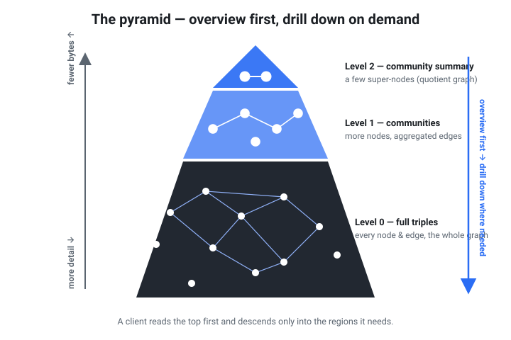

Graph data, for dummies
A gentle, practical tour of graph/network data formats and standards — with one
question running through every section: what kinds of questions does this let
me ask? If you've never touched RDF, SPARQL, or Neo4j, start here. By the end
you'll know the landscape and exactly what you can ask a .rete file.
What is a graph (a.k.a. a network)?
A graph is just two ingredients:
- Nodes — the things (a person, a software package, a disease, a web page).
- Edges — the relationships between things (Alice knows Bob;
webdependsOnlogging; smoking causes cancer).
That's it. A social network, a software dependency tree, a knowledge base (Wikipedia-as-data), an org chart, a causal model — all the same shape: dots and lines. The reason this shape is worth a whole family of tools is the kind of question it answers naturally, the kind that's painful in a spreadsheet or a table:
- Connection: "Who/what is directly connected to X?" (Alice's friends; the
direct dependencies of
app.) - Reachability / paths: "Is there any path from A to B, however long?"
(Does
apptransitively depend on the vulnerablelog4x?) - Structure / clusters: "What groups or communities exist? What's the big picture before I zoom in?"
Tables are great at "all rows where age > 30". Graphs are great at "everything reachable from here by following relationships." Hold onto that distinction — it explains everything below.
Two big families: RDF vs. Labeled Property Graphs
There are two dominant ways to write down a graph. They model the same dots and lines, but differently.
RDF (Resource Description Framework) breaks the world into triples —
short statements of the form (subject, predicate, object):
<Alice> <knows> <Bob>
<Alice> <age> "30"
Everything — including the relationship name (knows) — is a first-class
resource with a global identifier (an IRI, essentially a URL). It's the W3C web
standard for sharing data between systems.
Labeled Property Graphs (LPG), the Neo4j model, instead give nodes and edges labels and bags of key/value properties:
(:Person {name:"Alice", age:30}) -[:KNOWS {since:2019}]-> (:Person {name:"Bob"})
Note that the edge itself carries a property (since:2019) — that's the LPG
superpower and the main thing plain RDF can't do without extra modeling.
| RDF (triples) | Labeled Property Graph | |
|---|---|---|
| Atom of data | A statement (s, p, o) | A node or edge with properties |
| Identity | Global IRIs (web-wide) | Local node/edge ids |
| Edges carry data? | Not directly (needs reification / RDF-star) | Yes — properties on edges |
| Schema & meaning | RDFS/OWL (formal, inferable) | Conventions, mostly app-defined |
| Query language | SPARQL (a W3C standard) | Cypher / GQL |
| Best at | Sharing, merging, inference across sources | Rich edges, app-local traversal |
rete is RDF. It is a storage + query format for RDF — not a new model.
It can also translate a small, read-only subset of Cypher into SPARQL so LPG
folks can ask familiar MATCH … RETURN questions; see
Compatibility & interop.
The standards, plainly
The RDF world is a stack of standards, each answering a different kind of
question. Here's the whole map on one page — and what rete does with each.
| Standard | What it's for | A question it helps answer | In rete? |
|---|---|---|---|
| RDF | The data model: triples/quads | "What facts do I have?" | ✅ core — it's RDF |
| RDFS | Lightweight schema: class/property hierarchies | "If Dog is a subClassOf Animal, is Rex an Animal?" | ✅ via rete reason |
| OWL | Rich schema + meaning: disjointness, identity, transitivity | "Are these two facts logically contradictory?" | ⚠️ prototype OWL RL subset, not full OWL DL — reasoning |
| SPARQL | The query language for RDF | "Find everyone Alice transitively knows." | ✅ SPARQL support |
| SHACL / ShEx | Shapes/validation: does data match a required shape? | "Does every Person have exactly one email?" | ❌ not yet (see compatibility) |
| N-Triples / N-Quads | Plainest serialization (one statement per line) | "How do I hand my triples to a tool, losslessly?" | ✅ build input + N-Quads export |
| Turtle | Human-friendly RDF text format | "Can I read/write this by hand?" | ✅ build input + export (default graph) |
| JSON-LD | RDF as JSON, for web APIs | "Can I consume this in a JS app?" | ✅ expanded JSON-LD export (default graph) |
| Cypher / GQL | The property-graph query language(s) | "MATCH (a)-[:KNOWS]->(b) RETURN b" | ⚠️ read-only Cypher subset, translated to SPARQL — compatibility |
Two honest caveats up front: there's no SHACL/ShEx shape validation yet (you
can do syntactic and logical coherence checks instead — see below), and the
reasoner is a documented OWL RL subset, not a full OWL DL engine. rete also
has no SPARQL Update / writes — a .rete file is immutable by design.
What kinds of questions can you actually ask rete?
This is the heart of it. Below: a plain-English question → the kind of query it
is → the concrete rete command. (Examples use the bundled dependency graph,
examples/deps.nt; build it once with rete build examples/deps.nt -o deps.rete.)
| You want to ask… | Kind of query | Command |
|---|---|---|
| "What facts have this predicate?" (a point lookup) | Triple pattern | rete query |
| "Find a 2-hop chain / a join across edges" | Basic Graph Pattern (BGP) | rete bgp |
| "What transitively depends on / reaches X?" | Property path (+/*) | rete sparql |
| "How many edges per node? Top-N by count?" | Aggregation (GROUP BY) | rete sparql |
| "What kinds of things exist and how do they relate?" | Schema / class summary | rete schema |
| "Give me the big picture first, cheaply" | Pyramid overview | rete summary |
| "Is my data logically coherent?" | Reasoning / coherence | rete reason |
A few of these spelled out:
Fact lookup — match a single triple pattern; omitted positions are wildcards:
rete query deps.rete --predicate '<http://ex/hasVulnerability>'
Join (BGP) — chain triple patterns sharing a variable (here, a 2-hop path):
rete bgp deps.rete "?x <http://ex/dependsOn> ?y . ?y <http://ex/dependsOn> ?z"
Reachability / transitive — the question tables can't answer. The + is a
property path: follow dependsOn one-or-more times.
rete sparql deps.rete "PREFIX e: <http://ex/> SELECT ?d WHERE { ?d e:dependsOn+ e:log4x }"
Aggregation / counting — group and count, e.g. each package's out-degree:
rete sparql deps.rete \
"PREFIX e: <http://ex/> SELECT ?p (COUNT(?d) AS ?deps) WHERE { ?p e:dependsOn ?d } GROUP BY ?p ORDER BY DESC(?deps)"
"What kinds of things, and how do they relate?" — the dataset's effective
schema (classes by rdf:type, plus the class→predicate→class relations), without
reading the triple index:
rete schema deps.rete
"Give me the big picture first." rete stores a pyramid: a coarse
community summary at the top, drilling down to full triples at the base. You read
the overview first (a few small byte ranges) and zoom in only where a query needs
it — overview-first, like map tiles for graphs.

rete summary deps.rete # structural overview (Louvain community quotient graph)
"Is my data coherent?" — not "is it well-formed" but "does it logically
contradict itself?" The prototype OWL RL / RDFS reasoner materializes entailments
(e.g. subclass and transitive-property closures) and flags incoherent points
like an individual typed as two owl:disjointWith classes. It exits non-zero on
incoherence, so it doubles as a CI gate.
rete reason deps.rete
(Want plain "is this file valid RDF / not corrupt?" instead? That's rete validate on the source and rete verify on the built file — see
compatibility.)
Where rete fits
rete is a format + query layer for RDF that you can drop on a plain URL: no
database server, no query endpoint. Publish one immutable .rete file to S3, a
CDN, or a GitHub raw URL, and clients answer the questions above by fetching only
the byte ranges each query needs — overview (the pyramid) first, detail on
demand. The model is standard RDF; the queries are standard SPARQL.
Ready to ask your own questions?
- Getting started — install, build a file, run a query.
- Real-world scenario — publish a queryable SBOM to a URL and answer "what does this CVE impact?" over plain HTTP.